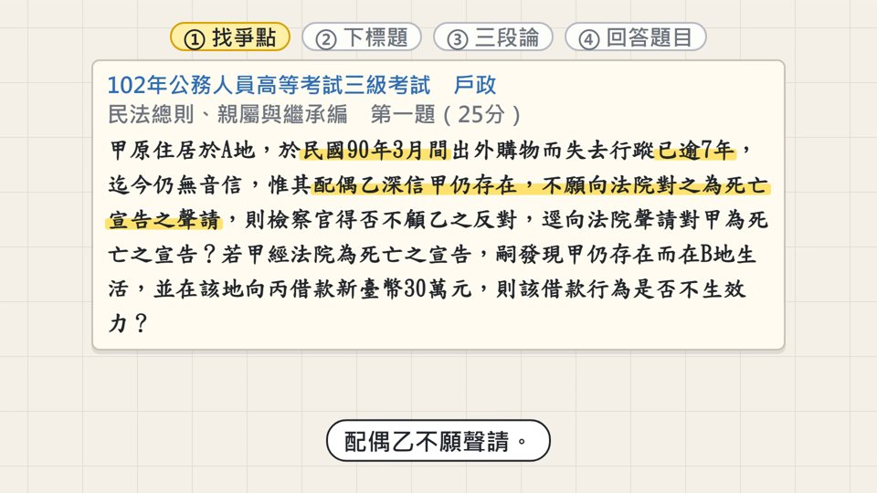
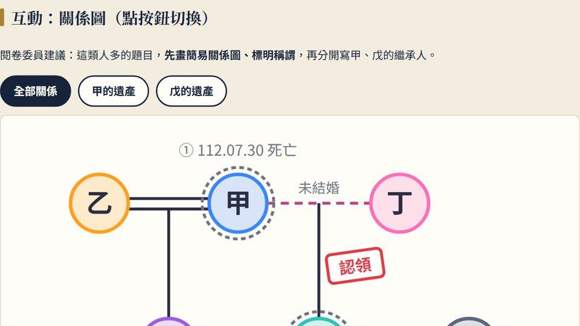

Jackie Chien
錢世傑
Legal scholar. AI educator. Builder of tools where jurisprudence meets Python.
法律人、AI 兼任助理教授、用程式碼寫判決以外另一半未來的人。
錢世傑
NEW Latest News · 最新消息
Nov 21, 2026 · TAAI 2026 International Conference
My focus · 我的重點
律師考題申論題：一題一支動畫影片＋一頁互動講義


每個網站都有動畫影片、條文逐句講解與互動練習。
Who I Am
I work at the intersection of law, education, and technology — turning legal expertise into Python-powered FinTech APIs, LLM-driven legal assistants, and AI agents that solve real-world problems. 我站在法律、教育與科技的交界處——把法律專業轉化為 Python 驅動的 FinTech API、LLM 法律助理，以及解決真實問題的 AI Agent。
As Executive Director of the Taiwan Law Foundation and a university adjunct assistant professor in AI applications, I believe the next generation of legal professionals needs to master both jurisprudence and code. All course revenue is directed to the Foundation to fund cross-disciplinary talent development. 身為台灣法律基金會執行長與大學 AI 應用課程兼任助理教授，我相信下一個世代的法律人，需要同時掌握法律思維與程式能力。所有課程收益均捐贈基金會。
| Role | Institution / Course |
|---|---|
| Executive Director執行長 | Taiwan Law Foundation台灣法律基金會 |
| Adjunct Asst. Professor兼任助理教授 | NCU — Business Law國立中央大學 — 商事法 |
| Adjunct Asst. Professor兼任助理教授 | Chung Yuan — AI Agent中原大學 — AI、AI Agent |
| Adjunct Asst. Professor兼任助理教授 | Fu Jen — AI Applications輔仁大學 — AI 應用 |
| Adjunct Asst. Professor兼任助理教授 | CCU — AI Literature Analysis國立中正大學 — AI 文獻分析 |
Investigative Platform
An eight-stage AI-assisted investigative workflow designed for frontline law enforcement, spanning 17 integrated systems from case discovery to prosecution. 針對第一線執法人員設計的八階段辦案工作流程，整合 17 個系統，從案源發現到判決全程 AI 輔助。
Tech Stack
Earlier Projects
Connect
Open to collaboration, speaking invitations, and conversations about the future of law and AI. 歡迎合作邀約、演講邀請，或只是想聊聊 AI 與法律的未來。